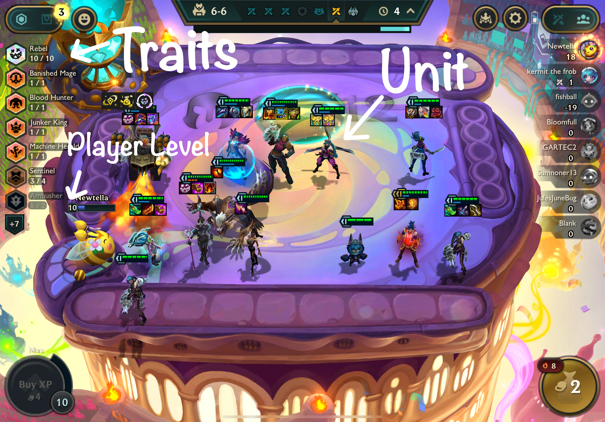

This project analyzes champion and trait data from Teamfight Tactics (TFT) Sets 12 and 13 to understand how changes in champion cost and design influence balance and performance. TFT, developed by Riot Games, is an auto-battler game where players strategically build teams of champions that automatically fight in a series of combat rounds. Each new “set” introduces fresh units, traits, and mechanics that reshape the meta-game.
Set 13 introduced a major change: 6-cost champions with exclusive 4-star upgrades, expanding the power curve beyond the previous 5-cost maximum. This project aims to investigate how this design shift affects champion statistics, value efficiency, and trait-level impact on performance outcomes.
In TFT, eight players face off in a round-robin format. Each player assembles a team of champions (also known as units) drawn from a shared shop. These units battle autonomously on a hexagonal board against other players’ teams.

The dataset includes win and top4 rates for thousands of team compositions (not individual units). (Note: win rate refers to the Top 1 Rate, i.e., the proportion of games where a composition finishes first. Each composition is a unique arrangement of champions and traits. Thus:
The primary data sources for this project were:
data$summary-section.Data were collected for Set 12 and Set
13 using a combination of R tools (rvest,
jsonlite, stringr, etc.) and archived through
the Wayback Machine to ensure
consistency after TFT site updates.
Once the data was acquired, the following steps were taken:
Champion and trait names were cleaned by removing artifacts such as
“TFT | Guide” using string operations like str_remove_all()
to standardize text across sources.
No missing values were identified in the scraped champion and trait data.
Due to a scraping error in Set 12, many champions were incorrectly assigned a “Portal” trait with no type. These were filtered out, and only valid trait-typed rows were retained.
Win and top4 rates for team compositions were extracted from: -
https://tftactics-data.kda.gg/meta/report
This endpoint returns JSON data with composition performance metrics for
ranked games, including the list of champions in each composition and
their aggregate performance.
Each composition was split into individual champion and trait components. For each champion or trait, we then computed average win/top4 rates across all compositions in which they appeared. These derived statistics allow us to model unit-level performance from team-level data.
To assess how well champion stats and traits predict composition-level win rate, we implemented three modeling frameworks:
Each model was trained on unit-level datasets, where each row represents a champion along with the average win rate across all compositions in which it appears. Models were evaluated using \(R^2\), RMSE, and AIC (where applicable).
The following table summarizes the key variables used in this analysis:
| Variable | Type | Description |
|---|---|---|
| win_rate | Numeric | Top 1 Rate — the proportion of games where the composition finished 1st |
| top4_rate | Numeric | Proportion of games where the composition placed in the top 4 |
| cost | Numeric | Champion gold cost (ranges from 1 to 6) |
| health | Numeric | HP of the champion at each star level |
| dps | Numeric | Damage per second (includes attack speed) |
| damage | Numeric | Damage dealt per basic attack |
| trait_* | Binary (0/1) | Dummy variable indicating whether a unit has a specific trait |